REVISÃO LOCAL · SEM PUBLICAÇÃOzAIon — luz pré-calculada e atlas compacto
Luz indireta pré-calculada no Blender/Cycles para os seis ambientes, mantendo os mapas de detalhe e as sombras de contato. A pele foi reempacotada apenas para cabeça/mãos: a aparência é preservada com menos memória. O brilho do tecido foi corrigido para azul-marinho e areia, e a luz PBR recebeu mais contraste local.
Detalhes e testes · Relatório do projeto
Atlas compacto: mesma aparência, menos memória
Capturas do GLB efetivamente usado no site, em WebGL com luz de inspeção fixa. Não são renders offline nem concept art. A iluminação de inspeção permite comparar a geometria; as imagens do escritório abaixo mostram o ambiente real.
Escritório antes/depois
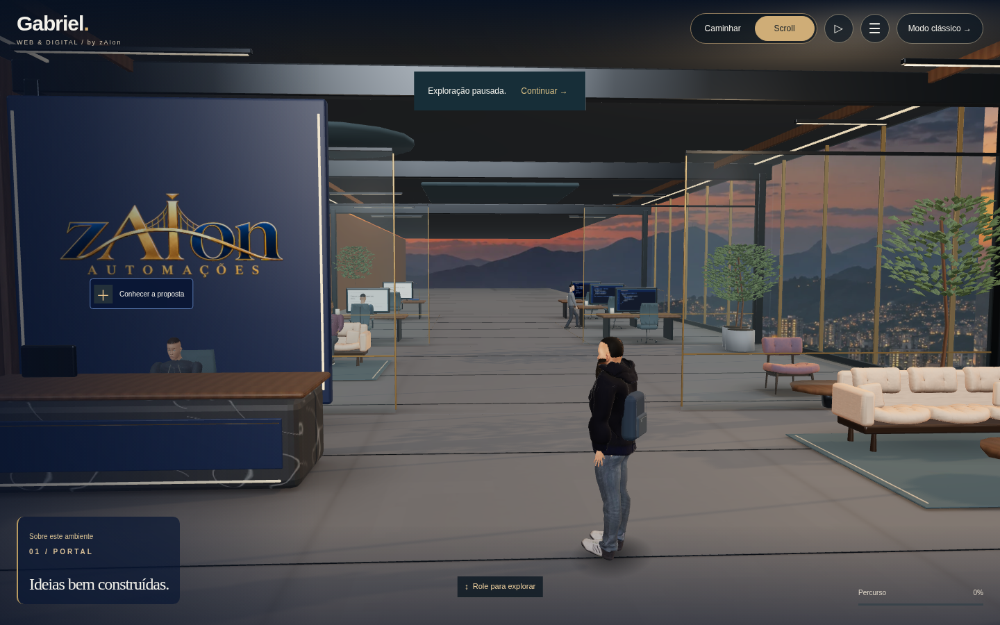
Antes: iluminação anterior, mesmo enquadramento PBR.Depois: luz indireta, materiais e contraste recalibrados. SwiftShader, sem GPU física.Isolar apenas o mapa de luz no mesmo runtime
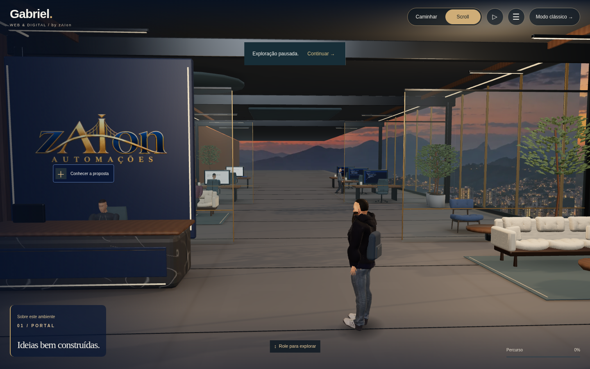
Setor zero anterior, sem o mapa; mesma configuração de luz do depois.Com o mapa. Demais setores e mobiliário permanecem os mesmos nesta comparação.Ver os seis setores navegáveis — capturas dos testes em SwiftShader
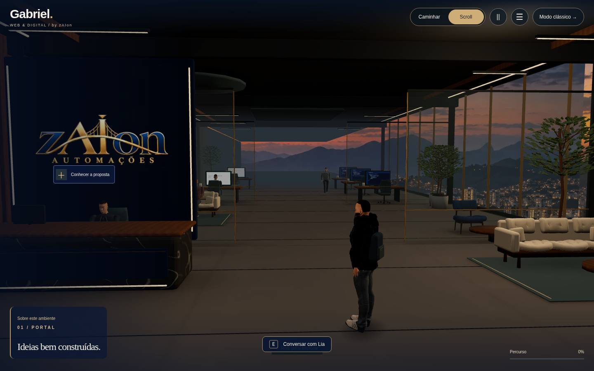
Recepção · captura real do aplicativo, caminho software.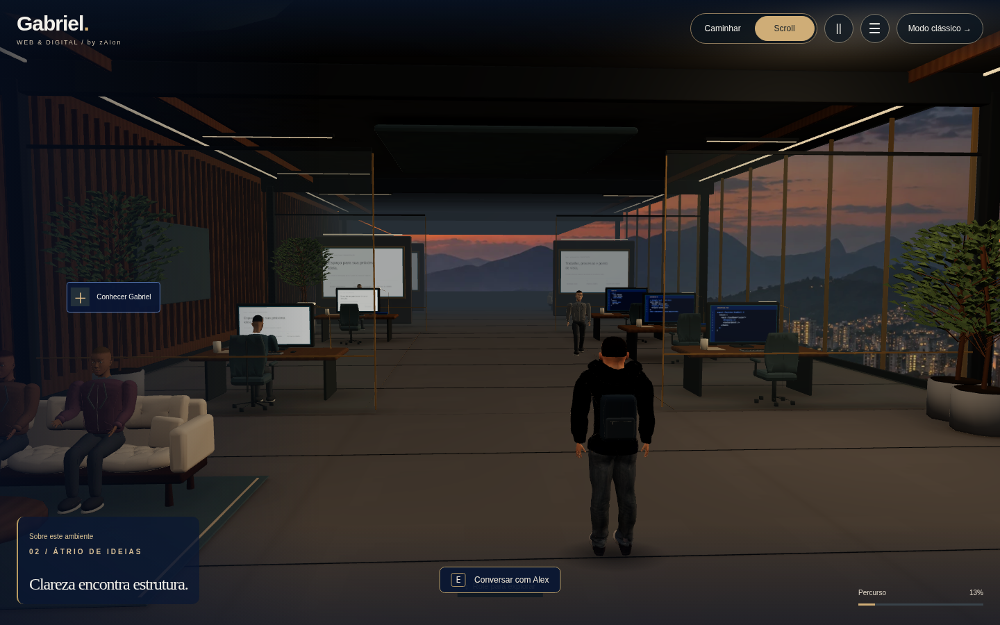
Lounge · captura real do aplicativo, caminho software.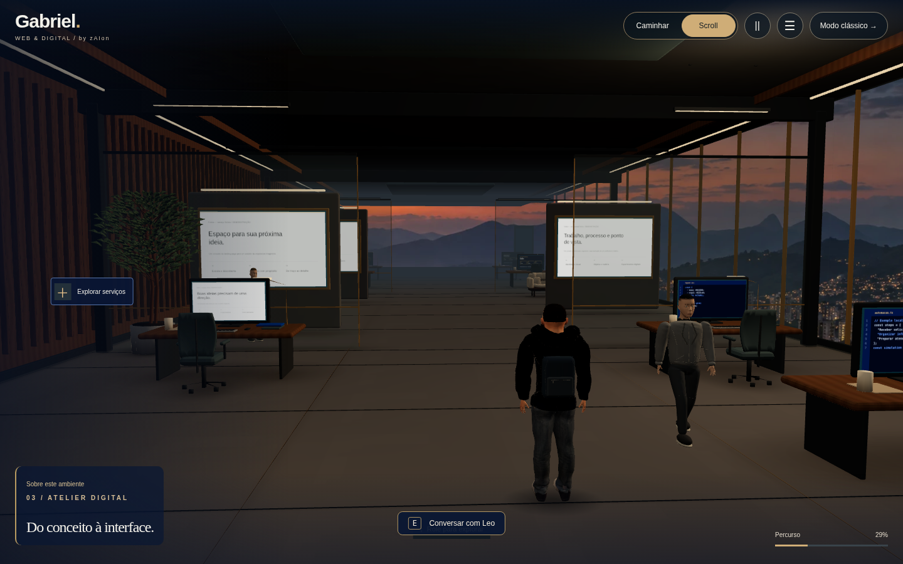
Estúdio de desenvolvimento · captura real do aplicativo, caminho software.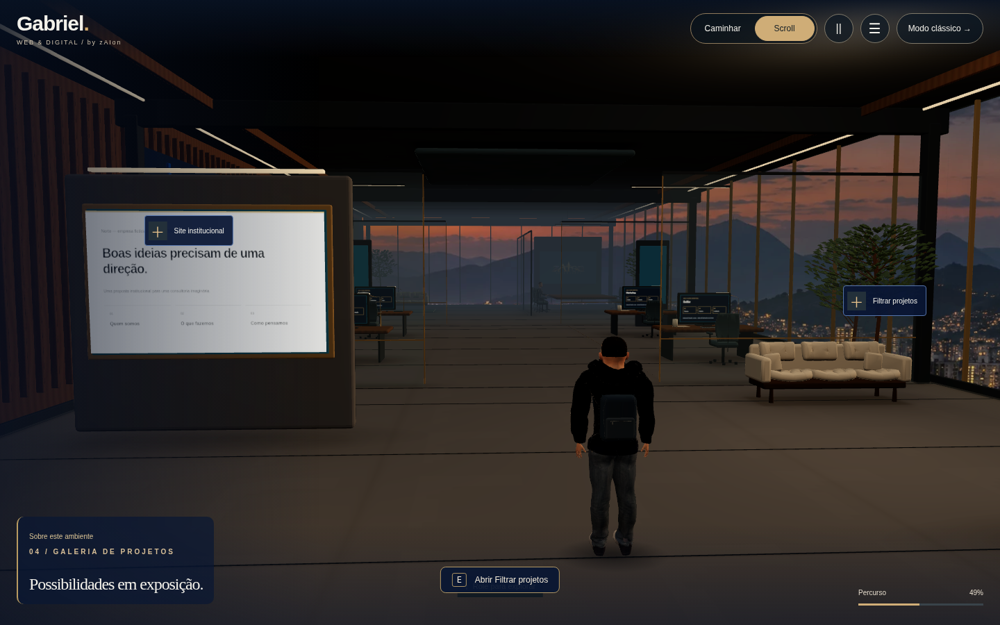
Galeria · captura real do aplicativo, caminho software.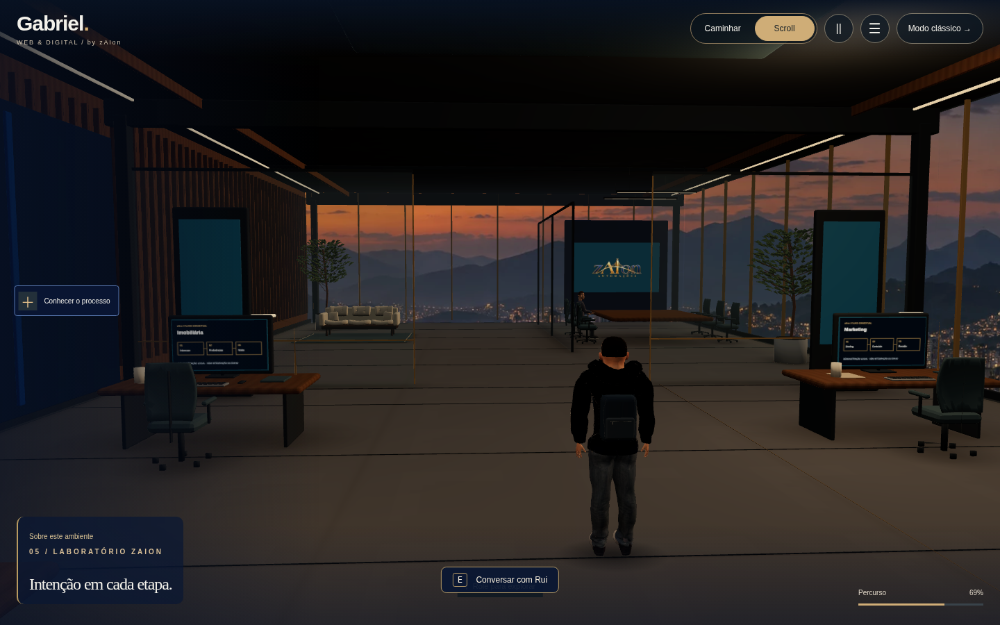
Laboratório de IA · captura real do aplicativo, caminho software.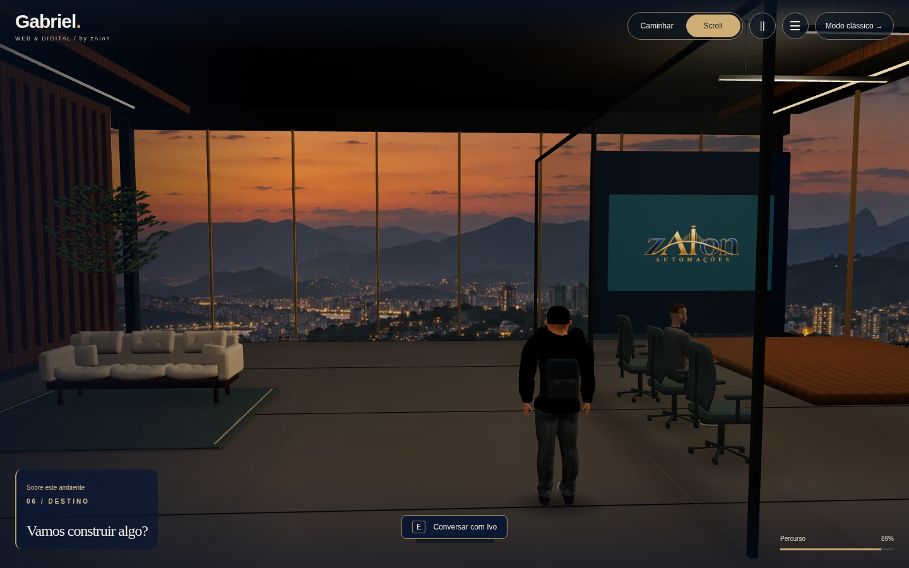
Reunião · captura real do aplicativo, caminho software.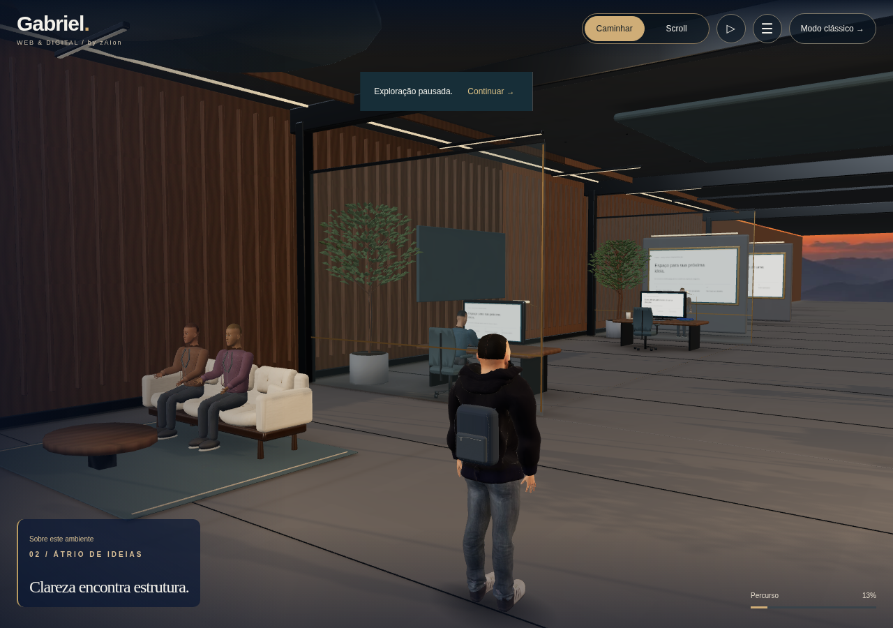
Lounge no aplicativo, caminho PBR em SwiftShader.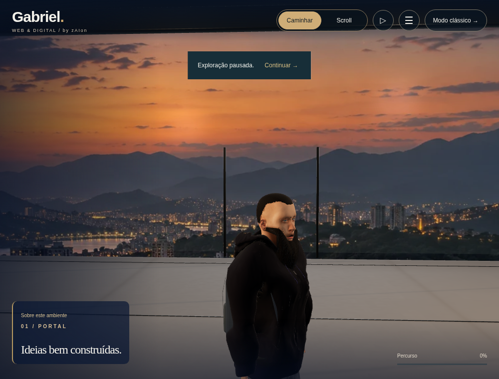
Personagem na aplicação, câmera próxima e caminho PBR em SwiftShader.Geometria para o celular
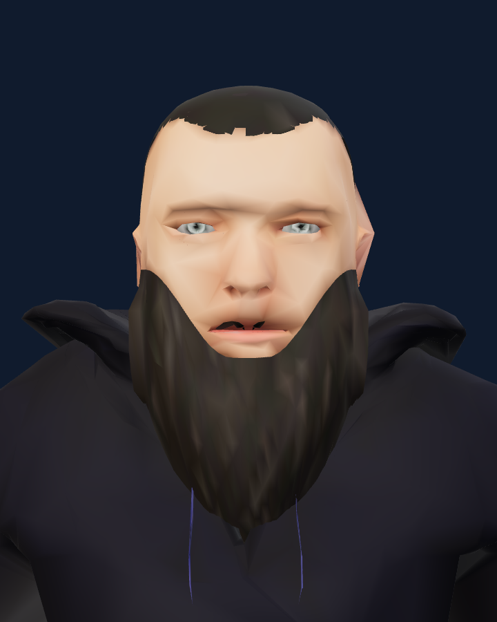
Versão leve, com texturas incorporadas às cores dos vértices e um único material. A ampliação expõe a perda de detalhe facial em relação ao PBR. O celular pode começar a caminhar enquanto a versão detalhada ainda baixa.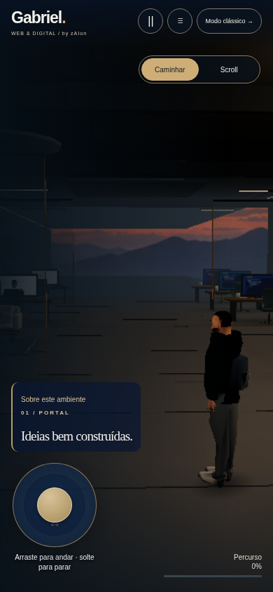
Analógico e movimento mais rápido preservados.O resultado ainda apresenta diferenças em relação às referências cinematográficas. A pele é de um modelo humano genérico licenciado, reempacotada por bake; não é a foto de Gabriel. Permanecem diferenças de identidade facial, grooming, mobiliário e iluminação em relação às referências. Não há escaneamento nem animação facial por blendshapes. Os testes de navegador usam software e emulação móvel; não comprovam FPS em telefone ou GPU físicos.
Figurino: moletom Elvaerwyn — elvs_hooded_sweat_jacket1, CC BY, adaptado. Anatomia, pele e demais componentes nativos MakeHuman: CC0. Fontes e licenças completas.
ZIP: extraia e execute node INICIAR-REVISAO.mjs. O formulário permanece local, sem envio.